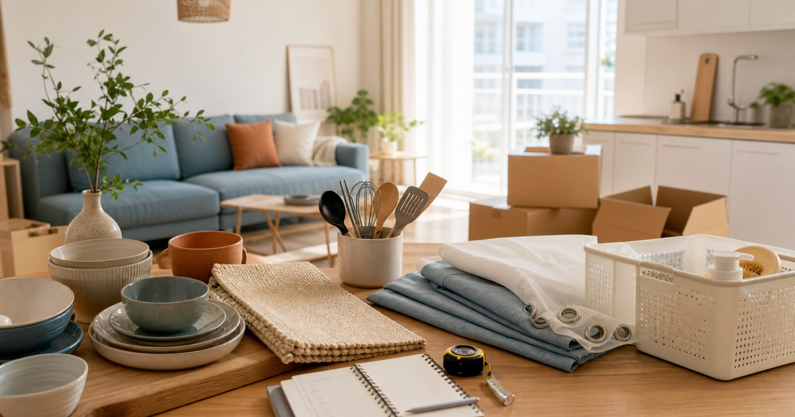

新家第一個月不要亂買：餐具、地墊、窗簾與生活用品的採買順序
搬進新家第一個月先穩住吃飯、出入口、光線和清潔動線，再慢慢補風格物件。

搬進新家最容易犯的錯，是把想像中的生活一次買齊。漂亮餐具、地墊、窗簾和收納盒全部進門後，才發現尺寸不合、顏色太滿、清潔太麻煩。第一個月應該先讓吃飯、出入口、光線和日常清潔穩下來，風格才有地方慢慢長出來。
第一週只買會立刻用到的東西
搬家第一週最重要的是能吃飯、能洗澡、能睡覺、能出門。餐具不用成套到位，先準備每天會用的碗盤杯筷；地墊先放浴室和玄關；窗簾先處理隱私與光線，裝飾性布品可以晚一點。
這個順序會讓預算更清楚。新家一開始有很多視覺空白，但不是每個空白都需要立刻填滿。先讓基本動線穩定，再看哪些角落真的需要被改善。
第一週也請保留紙箱或暫存區。還沒確定位置的物件不要急著拆封上架，否則日後要退換、移動或重新整理都更麻煩。
這段時間也適合觀察家裡的光線和濕氣。早上會不會太亮、下午是否西曬、浴室門口是否容易積水、餐桌旁是否常被紙袋佔據，這些問題會直接影響窗簾、地墊與收納用品的優先順序。
- 餐具先滿足每天使用，不急著成套。
- 地墊先放會濕、會髒、會打滑的位置。
- 窗簾先處理隱私與光線，再看風格。
餐具先從人數和洗碗頻率決定
Home & Ceramics 和廚Fun生活工坊可以從餐具、餐廚工具和上桌用品方向參考。新家餐具最先要問的是幾個人住、多久洗一次碗、是否常帶便當或招待朋友，而不是第一眼喜歡哪個花色。
若家裡沒有洗碗機或瀝水空間有限，過多大盤、深碗和杯子會很快變成水槽壓力。先用少量好洗、好堆疊、能互相搭配的款式，等料理習慣穩定後再補特殊餐具。
餐具材質也要回到使用習慣。會微波、常外帶、常煮湯或常招待朋友的人，需要看的規格不同；商品是否可微波、可洗碗機、耐熱與保存方式，都請回到商品頁確認。
餐具數量也可以用一個很務實的公式估算：平日使用人數加上一到兩位臨時客人即可。若家裡很少招待朋友，四人份以上的完整組合可能只是在櫃子裡佔空間。
Elite 嚴選
地墊和窗簾是家裡的邊界管理
富居閣精選和尊爵家 Monarch 可以放在地墊、窗簾和軟裝脈絡裡比較。地墊負責把外面的灰塵、水氣和拖鞋動線停在正確位置；窗簾則負責光線、隱私與室內溫度感。
地墊不要只看圖案，還要看厚度、防滑、清洗方式和門片是否打得開。窗簾也不要只看顏色，還要先量窗寬、窗高、軌道形式與是否需要遮光或透光。
如果是租屋，任何需要鑽孔、固定或大面積更換的項目，都應先確認租約與房東規定。可拆、可洗、可帶走的物件，通常比較適合第一個月。
- 玄關地墊要確認門片開合。
- 浴室地墊要重視乾燥與清洗。
- 窗簾先量尺寸，再談顏色。
生活用品要照著家務路線買
安啦居家可以從家庭日用、收納和廚房小物方向補位。採買生活用品時，請先沿著一天的家務路線走一遍：起床、洗漱、做早餐、出門、回家、洗衣、收垃圾。哪一段卡住，就先補哪一段。
很多新家不缺物件，而是缺位置。清潔用品沒有固定區、備品沒有標示、餐具沒有瀝水位置，最後會讓生活用品越買越多。先讓物件有固定家，再決定是否需要添購。
預算有限時，先買會降低日常摩擦的物件，例如瀝水、清潔、垃圾分類、洗衣和出入口收納。裝飾品等住滿一個月後再補，判斷會準很多。
如果兩個人以上一起住，生活用品還需要有共同規則。清潔用品放哪裡、備品用到多少要補、垃圾袋尺寸是哪一種，這些看似瑣碎的約定，會比多買一個漂亮收納盒更能降低摩擦。
一個月後再做第二輪風格整理
住滿一個月，你會更清楚哪裡真的暗、哪裡真的髒、哪裡真的不順手。這時再補餐桌布品、掛畫、香氛、額外餐具或小家具，會比剛搬家時一口氣買齊更穩。
也建議保留一份退換與尺寸紀錄。窗簾寬度、地墊尺寸、餐具材質、櫃內深度和常用品牌頁，都可以記在手機裡，之後補買不必從零開始。
本文不提供即時販售資訊承諾；所有商品規格、活動與配送條件請以下單前商品頁公告為準。
同主題品牌參考
FAQ
新家第一個月最不建議先買什麼？
最不建議先大量購買裝飾品、特殊餐具和大型收納家具。還沒住出真實動線前，這些物件容易尺寸不合或使用頻率太低。
窗簾和地墊可以只看照片挑嗎？
不建議。窗簾需要量尺寸、確認軌道與遮光需求；地墊需要看厚度、防滑、清潔方式和門片開合。照片只能作為風格參考。
餐具要一次買成套嗎？
不一定。先依人數和洗碗頻率準備日常會用的數量，等料理與招待習慣穩定後，再補特殊盤型或成套餐具。
下一步建議
先量尺寸、寫下一天家務路線，再依餐具、地墊、窗簾與生活用品順序補齊。
重要警語
本文為一般搬家與居家採買參考，不提供即時販售資訊、促銷或裝修承諾；商品資訊請以商品頁公告為準。
本文含品牌／商品導購連結；若你透過部分商品連結前往選購，Elite Fashion 可能取得合作收益。本文仍以編輯判斷與使用情境整理為主，價格、規格、活動與庫存請以商品頁公告為準。